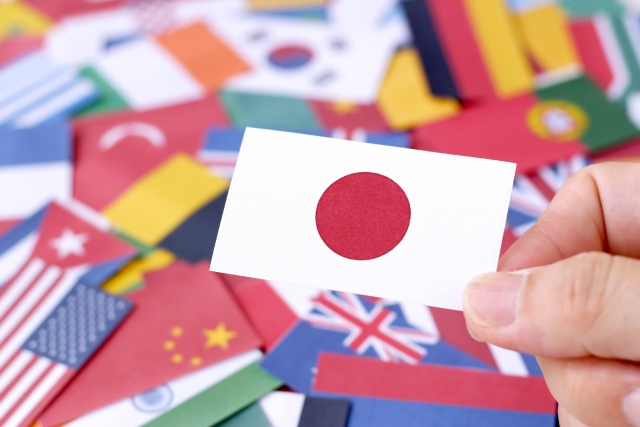

お盆休みも終わりましたが皆さんどう過ごされたでしょうか。行楽地は元より里帰りの人々でどこもかしこもゴッタがえしでかえって疲れきったのではないでしょうか。
我が家は真夏なのに家族がインフルエンザにかかったり、夏風邪をひいたりでせっかくの旅行計画もドタキャンの有り様。
仕方なく私は1人で夏の風物誌甲子園の高校野球を見に出発したものの、何と満員御礼止めで球場に入れずホテルでテレビ観戦・・・と散々な休日でした。
ところで夏の風物誌というと毎年この時期テレビや新聞などで戦争特集が組まれます。
今年も戦後72回目の終戦記念日の8月15日前後メディアは多くの特集を組みました。メディアの論調はだいたい同じ。
「戦争の悲惨さ」「戦争の愚かしさ」「戦争の恐ろしさ」を訴えるという形です。それら「戦争の悪」を告発すること自体悪いというのではありません。
でも私はいつも強い違和感を感じるのです。
違和感の第1はメディアの姿勢に、戦争反対を錦の御旗のように言い続ければ戦争がなくなるかのような安易な正義感（偽善）を感じることです。
世の中には「暴力反対」とか「権力の横暴を許すな」とか誰も反対できない正しいことを声高に叫ぶことで己の正義感を満たす人がいますがこれと似ています。
それは思考停止であってかえって危険ではないでしょうか。
そういえば私の学生時代も、ヘルメットを被りサオや棒を振りまわして「戦争反対」「暴力反対」を唱えながら暴力をふるう集団がいました。暴力反対をスローガンのように唱えても暴力はなくならないということです。
同じことがメディアの姿勢にも言えます。「戦争反対」と叫べば地上から戦争はなくなるのでしょうか。
なぜ「平和」を求める施策を提言できないのでしょうか。
情緒的にあるいはヒステリックに「戦争反対」を訴えるだけでは新たなタブーをつくるだけではないのでしょうか。
数年前私の塾の生徒（中学生）がこんな話をしてくれました。彼は歴史や経済、社会問題に興味がありとてもよく勉強している生徒でしたが、学校の社会の授業で自衛隊の話が出たとき「先生、日本の防衛力（武力）は世界で第2位なんですよね」と確認したところ、先生は「お前はなぜそんなことを言うのだ！戦争を肯定するのか」と怒ったというのです。
この教師のトンチンカンな反応を私は笑うことができませんでした。
まさに「戦争」を想像させる用語自体がこの教師にとってタブーとなっているのでしょう。タブーの前では「事実」さえも見えなくなっているでしょう。そこには理性とか論理、知的分析のカケラさえ見い出すことはできません。
そのことは戦後72年間ただひたすら「戦争はいけない」と情緒的に反応してきた無思考が多くの人に浸透している結果だと感じます。その端的な現れをメディアの戦争特集に見るのです。
「事実」をアカデミックに検証すること
違和感の2つめは、メディアが「戦争体験を語り継ぐことが大事」と体験者の証言を好んで報じる点です。
どこが問題（？）かというと次の2点です。
1）体験者の証言はいくら生々しくてもそれは個人的体験であり、戦争の全体像を必ずしも明確にするものではないこと。
2）総じて「体験」は自分たちがいかに悲惨な目にあったかという被害者目線の話であり、これらを報じることで「日本人は戦争の被害者であった」というある種誤ったメッセージを発信していること。
特に2）の「日本は被害者だ」というのは国際的にも歴史的事実の上でもとうてい理解されないことではないでしょうか。あの戦争に関していえば日本は戦争を始めた当事国、いやもっとハッキリ言えば戦争を仕かけた側であるからです。
「悲惨な実態」を語る体験者の証言がメディアによって断片的にくり返されることで、かえって歴史的事実まであいまいにしてしまうならやはり危険であると思います。なぜ「危険」かというと、先にも言いましたが「戦争は悲惨だ、恐い」と情緒に訴えるだけでは戦争はなくらないと思うからです
本当に戦争を起こしたくなかったら、感情ではなく理性で徹底的に検証するしかないのです。そのためには最低でも戦争に至る経緯とその背景くらいは押さえる必要があります。
まずそういう「事実」を正しく踏まえた上で「なぜ戦争という手段に出たのか」「なぜあのような戦い方だったのか」「終戦工作はもっと早い時期にできなかったのか」「シビリアンコントロールはなぜ作用しなかったのか」そういう疑問について私たち一人ひとりが考えることが大事ではないかと思います。
さらにできたら、その上で「日本の軍隊組織の特殊性」「日本の近代化の問題点」なども考えなければならないと思います。
あのような「間違った戦争」を起こした背景には日本人の行動や思考形態のゆがみも原因としてあるに違いないからです。
それは日本の近代化のプロセスに内包する「ゆがみ」かも知れません。
組織論も考える必要があります。軍隊に限らず会社や役所など日本の組織には今なお共通するものがあるからです。指揮命令系統のあいまいさ。部下が上官（司）の意向をそんたくする。「そんたく」によって下が暴走する。責任の所在は不明朗。集団をまとめるのはビジョンや理性的目標ではなく情緒的結束。つまり組織の非合理性という点で基本的に変わっていない。
国民性の分析と反省は必要です。戦争の背景としてこのようなアカデミックな分析こそが大切なのです。残念ながら私たちは戦後いちども、このような戦争分析と議論を国民的総意としてやってきませんでした。戦後私たちの姿勢は、すべてを軍部のせいにして戦争を忘れ去ろうとするか、戦争を正当化するか、両極端なものでした。要するに冷静かつ客観的な戦争分析を行ってこなかったということです。
そうして毎年夏になると“風物誌”のように一斉にメディアが伝える「悲惨な戦争」特集であり、情緒的反応が繰り返されるのです。
戦争をアカデミックに分析する姿勢なくしては、戦争をおこさないための方法を構築することは困難です。
最後に
太平洋戦争（中国戦線も含む）での日本の犠牲者は兵士約2百万、一般市民約百万。総計3百万です。その他中国大陸や東南アジア、太平洋の島々と連合国の犠牲者（日本軍に殺害された、あるいは戦闘に巻き込まれて亡くなった人）の総計は、ある資料によればおよそ1千万です。そしてその大部分は非戦闘員つまり一般市民です。
人的被害だけ見てもこれだけあるのです。
私たちは戦争当事国の人間として、きちんと戦争と向き合い自らの手で「原因」と「再発防止策」を世界に明らかにする責任があるのです。これなくして日本が国際社会からの真の理解を得ることは難しいでしょう。
だから私は教育においても子どもたちにはまず「事実」そのものをきちんと教えることが大切だと考えています。正確な知識を持ち、問題点を共有することが優先されるべきです。そうして初めて「体験者」の証言もいきてくるでしょう。
余談ですが、私は塾講師時代長いこと「戦争」をテーマに特別授業を行っていました。そこでは戦争に至る経緯を、近代化の流れの中に位置づけ戦争の全体像を学ぶよう心がけていました。
時には小学生を連れて沖縄の戦跡を訪ねたり九州の特攻隊基地を巡ったりと、知識と感覚の両方に訴える試みを行っていました。
ささやかな取り組みかも知れませんが、子どもたちが将来戦争というものを客観的に考える視点を身につけてもらいたいと思ったからです。
History repeats itself.
歴史はくり返すと言われます。そうならないためにも私たちができることは何か。
それは少なくとも「戦争反対」を感情的に訴えることではない。それだけは確かではないでしょうか。